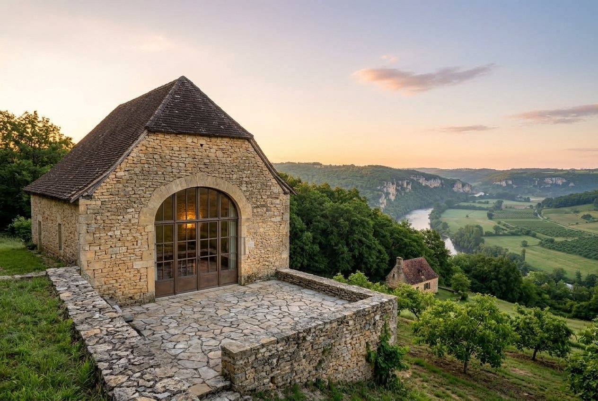

The area
Around Alles-sur-Dordogne
Le Coteau looks over the Dordogne valley, where the river draws its great loops before meeting the Vézère. Hilltop villages, abbeys, caves: everything below is sorted by how long it takes to get there.
On foot 20 minutes' walk at most
The Dordogne at the foot of the hillside
A pebble beach, clear and shallow water in summer; a place to picnic in the shade of the ash trees.
See on the mapThe walnut trail
A 5 km loop that starts at the gate, between the walnut groves and the edge of the plateau.
See on the map
A few minutes away 15 minutes' drive at most
Photo Père Igor, CC BY-SA 4.0 Limeuil
A hilltop village where the Vézère meets the Dordogne, with its lanes and its panoramic gardens.
Thomas’s tip: go up to the gardens at the end of the day, when the low light skims the two rivers.
See on the mapPhoto Père Igor, CC BY-SA 4.0 The Trémolat meander
The biggest loop of the Dordogne, seen from the viewpoint above the fields.
See on the mapPhoto Thesupermat, CC BY-SA 3.0
.jpg){kind=link}
.jpg){kind=link}

Half a day out 45 minutes at most
Photo Père Igor, CC BY-SA 4.0 Les Eyzies
The national museum of prehistory and the rock shelters of the Vézère valley.
See on the mapPhoto Jebulon, CC0 Beynac
The castle on its cliff, above the Dordogne and its gabarre boats.
Marie’s tip: park at the bottom, and walk up through the village rather than by the road.
See on the mapPhoto Benjamin Smith, CC BY-SA 4.0
.jpg){kind=link}


A day out further
Photo Renhour48, CC0 Lascaux IV
The full replica of the cave, in Montignac, in the Vézère valley; book your tickets ahead in summer.
See on the mapPhoto Dynamosquito from France, CC BY-SA 2.0


Markets
A market almost every morning.
- Mondayno market nearby
- TuesdayLe Bugue, morning
- WednesdaySarlat, morning
- ThursdayLalinde, morning
- FridayLe Buisson-de-Cadouin, morning
- SaturdaySarlat, all dayLe Bugue, morning
- SundaySaint-Cyprien, morning
Season by season
When to come?
The same view, from the sitting room window, and what’s on each season.
Spring
The walnut trees come back into leaf, the Dordogne runs high, the Limeuil gardens reopen. The best time for walking.
- May · The strawberry festival, Vergt
Summer
The water is lovely at the foot of the hillside, the villages come alive. Book Lascaux IV and the canoes early.
- Late July · The Sarlat theatre festival (Festival des Jeux du Théâtre), Sarlat
Autumn
The walnut harvest, morning mist over the valley, ceps in the Bessède forest.
- Mid-September · European Heritage Days, nationwide
- Mid-November · The film festival, Sarlat
Winter
Truffle markets, wood fires, villages given back to the people who live there. We are closed at this time of year.
- December · The Christmas market, Sarlat
- Mid-January · The truffle festival, Sarlat
Getting here
Finding your way to us.
By car
The Coteau lane climbs up from the village; park at the wooden gate: Le Coteau is 80 m away, under the walnut trees, with no lighting in the evening; La Grange has its own parking space in front of its door.
Chemin du Coteau, 24480 Alles-sur-Dordogne
By train
Le Buisson station, 6 km away (8 minutes). Thomas will pick you up, on request.
By plane
Bergerac airport, 40 km away (45 minutes); car hire on site.
For everything else, opening times and tickets: the Dordogne valley tourist office.
The gîtes
Two gîtes, a place to drop your bags.

